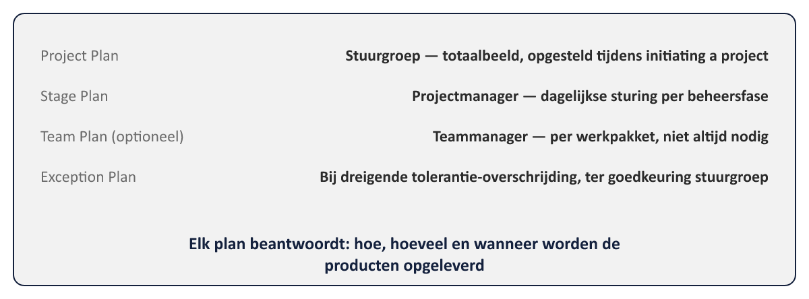
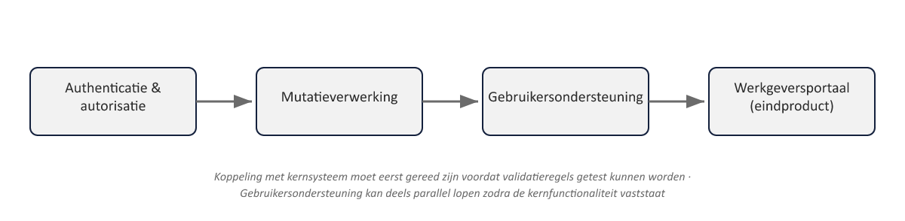

Sheet 1Titel
Project- en Programmamanagement
Niveau 1 · Deel 4: Plans
Sheet 2Van principe naar techniek
Principe 6 (focus on products) → Plans-practice → product-based planning
Antwoord op bevinding 4
Sheet 3Wat een plan beantwoordt
Hoe? Hoeveel? Wanneer?
Op meerdere niveaus tegelijk
Sheet 4Vier planniveaus

- Project Plan — stuurgroep, totaalbeeld
- Stage Plan — projectmanager, per fase
- Team Plan (optioneel) — teammanager, per werkpakket
- Exception Plan — bij dreigende tolerantie-overschrijding
Sheet 5Plannen zijn levende documenten
Net als de business case: regelmatig herzien, niet eenmalig vastgesteld
Sheet 6Voorbeeld: een barbecue plannen

Sheet 7Stap 1: Project Product Description
Wat is het eindproduct? Kwaliteitsverwachtingen? Acceptatiecriteria en -methoden?
Senior User specificeert, projectmanager schrijft meestal de tekst
Sheet 8Stap 2: Product Breakdown Structure
Hiërarchische opsplitsing — groeperingen én producten
Toont samenstelling, geen volgorde
| Groep | Deelproducten |
|---|---|
| Authenticatie & autorisatie | Inlogmodule; rollenbeheer voor werkgeversaccounts |
| Mutatieverwerking | Digitaal mutatieformulier; koppeling met kernsysteem; validatieregels |
| Gebruikersondersteuning | Handleiding voor werkgevers; trainingsmateriaal voor Klantcontact |
Sheet 9Stap 3: Product Descriptions
Per (significant) product: doel, samenstelling, herkomst, kwaliteitscriteria
Vuistregel: voegt dit daadwerkelijk iets toe?
Sheet 10Stap 4: Product Flow Diagram
Nu pas: volgorde en afhankelijkheden
Van start tot eindproduct

Sheet 11Niet lineair, maar iteratief
Een PFD kan een ontbrekend product in de PBS aan het licht brengen
Terug naar stap 2 is normaal
Sheet 12Van producten naar activiteiten
- Schatten (geen vaste PRINCE2-techniek — sectorafhankelijk)
- Plannen/schedulen
- Risico’s analyseren
- Documenteren
Sheet 13Terug naar bevinding 4
WGP 2.0: “analysefase gereed” — geen product, geen acceptatiecriterium
Niemand kon objectief vaststellen wanneer een fase écht klaar was
Sheet 14Meridiaan: vereenvoudigde PBS
Werkgeversportaal
→ Authenticatie & autorisatie (inlogmodule, rollenbeheer)
→ Mutatieverwerking (formulier, koppeling kernsysteem, validatieregels)
→ Gebruikersondersteuning (handleiding, trainingsmateriaal)
Sheet 15Vooruitblik
Deel 5: Quality en Issues — toetsen of producten voldoen, en omgaan met wat toch misgaat